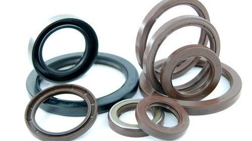
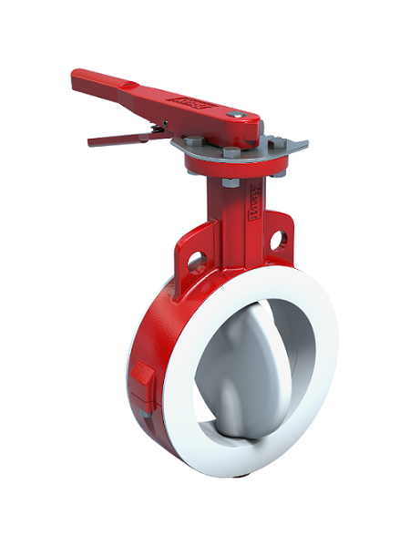
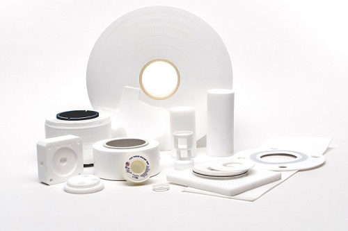
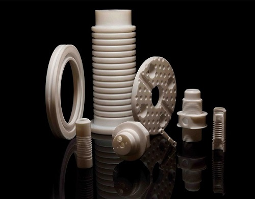
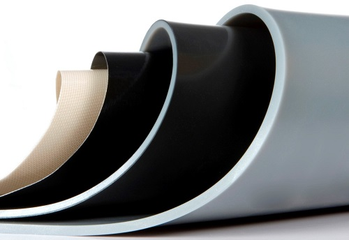
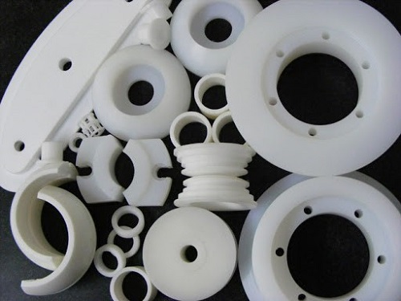
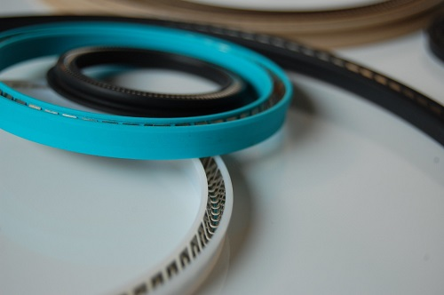
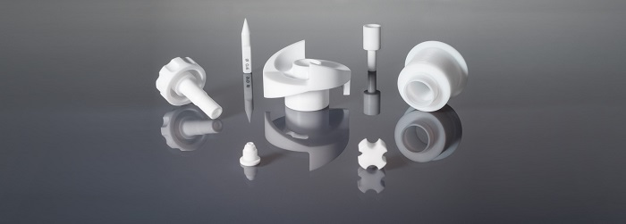
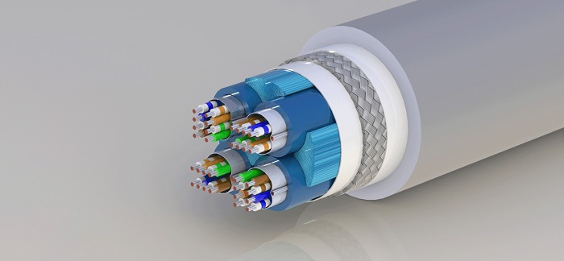
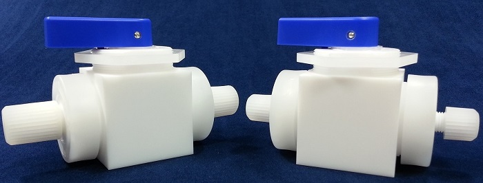

We serve some of India's top comapnies in manufacturing products made up of PTFE.
Being hydrophobic, non-wetting, high density and resistant to high temperatures, PTFE is an incredibly versatile material with a wide variety of applications, though it's perhaps best-known for its non-stick properties
PTFE products are used in almost every Industry one can think of including Defence, Aerospace, Automobile and many more.
Here are just a Few in which we have consistently provided quality products since our inception.
PTFE and other polymer are widely used in the Automotive industry. These fluoroplastics are able to maintain their outstanding material properties even when exposed to high temperatures and/or aggressive fuels. PTFE and PEEK are highly suitable for processing at high (or low) temperatures and are used in applications where fire and explosion need to be avoided. Due to the reliability of sustainable, high value plastics it is an often chosen material for Automotive applications. Today 'thermal management' is very important in the automotive industry. In some applications we deliver Moldflon (injection moldable PTFE) products.
For Maritime applications, products made out of PTFE, PTFE -composite, PTFE filled and related engineering plastics are mainly used. These materials are able to retain their outstanding material properties even when exposed to high temperatures and aggressive fuels. When pressure and wear is combined, our fluoroplastics offer a right solution. Our products are used in extremely heavy transports, like loading/unloading of boats and/or drilling rigs (platforms). For these applications a right combination of lubrication and surface is required to keep the friction as low as possible.
Due to the reliability of sustainable, high performance plastics (like PEEK and Polyimide) it is an often chosen material in Aerospace applications. These materials are able to retain their outstanding material properties even when exposed to high temperatures and aggressive fuels. Due to the low coefficient of friction of fluoroplastics, the products are also suitable for processing in small spaces. The Crossflon range of products, such as bearings, bushes and seals are besides aerospace also suitable for petro chemical - off shore and other industrial applications. For example use in compressors, pumps, (vaccuum) valves, mixers and regulators. In those applications where temperature, wear and pressure are important parameters we can offer a proper solution with diverse Crossflon materials.
For the Semi-conductor industry, Polyfluor Plastics provides materials that are chemically inert and have non-wetting (hydrophobic) properties, such as PTFE, PCTFE, PP, HDPE. Applications include: Carriers - Diffusion Filtration & Parts - Linings - Tubes (Spiral) & Fittings - Turntables - Water Cleaning. PTFE products are mainly used for critical applications in which chemical resistance and clarity/purity of the material is very important.
Applications in the Construction industry often require a durable product that has a good resistance to abrasion by weather and/or high temperatures. Key properties for our fluoroplastic materials. Applications in this sector are very diverse; from moving large constructions such as bridges etc. by means of slide bearing sheets to the use of small seals.
Defence sector maintains a high standard for the use of materials in their applications. Due to the standard properties of fluoroplastics, they are often used in diverse applications. Mainly used in military vehicles, submarines, aircraft carriers, aircrafts and other artillery systems.
Virgin PTFE and/or PTFE with fillers are widely used in both onshore and offshore applications in Oil&Gas companies. For example, in pumps and compressors, but also for the transportation of heavy constructions such as platforms (for which slide bearing pads are used). In the Petrochemical industry there are a lot of applications requiring high temperatures. PTFE is able to maintain its outstanding material properties even when exposed to high temperatures and aggressive fuels.
Due to the high maximum working temperature, low coefficient of friction, low dielectric constant and tensile strength, fluoroplastics like PTFE are very suitable for divers electric (insulting) applications.
Due to the high maximum working temperature, low coefficient of friction, low dielectric constant and tensile strength, fluoroplastics like PTFE are very suitable for divers electric (insulting) applications.
Applications in the (semi) Medical industry require clean, smooth, non-toxic and non-allergenic materials. Properties which are standard for several (fluoro)polymers. As a result, these materials are suitable for use in applications with human tissues and fluids (for short periods).
For the Machinery&Equipment industry Polyfluor Plastics delivers a wide range of products, made from PTFE, PCTFE, PEEK, PFA, FEP and other fluoroplastics
In the Food industry there are high standard regulations regarding hygiene. Due to the low coefficient of friction of fluoroplastic products (and hence the smooth surface), contamination is kept to a minimum. One of the key properties why products of among others PTFE are very suitable, and commonly used, in the Food&Packing industry. Through numerous migration testing and inspections, we deliver products in accordance with regulation EU 10/2011 which is now applicable to parts supplied for processing/delivery to/by the food industry. As well, there is a FDA approval available for various other (fluoro)plastic materials.